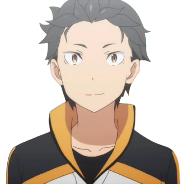

Qui est-il ?
C'est un jeune homme de 17 ans qui se retrouve transporté dans un monde fantastique sans savoir pourquoi...
En faisant la rencontre de personnages secondaire et en participant à leur aventures,
il se découvre un pouvoir et ce, en mourant.
Mourir va donc devenir courant au sein de l'Œuvre, et Subaru va en profiter pour connaître le futur,
Au prix de sa santé mentale